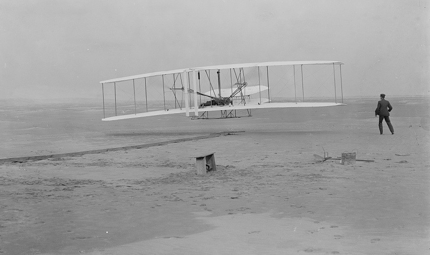
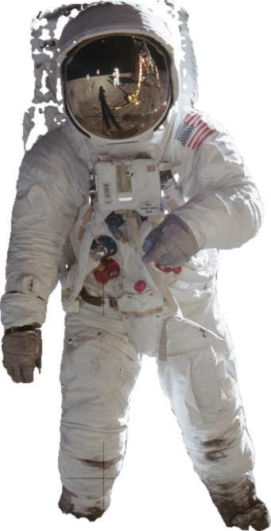

Edit mode
Source layers

Scene photographKitty Hawk, 1903

Active personApollo 11 astronaut
Foreground overlap
Keep a person or object in front of the new layer.
Articulated pose
Move joints on the cutout, or borrow a pose from another photograph. For video and webcam,
freeze the frame you want to edit.
Live pose
Step back so your full body is visible, strike a pose, then freeze it or save the composite.